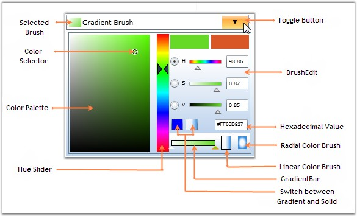

The various components of the BrushSelector are illustrated in the following screen shot.

Figure 345: Components of BrushSelector
Following is a brief description on the components mentioned above.
· BrushEdit - It represents the color selectable area in the BrushSelector control.
· Selected Brush - It represents the color selected by the user.
· Color Selector - It is used to select colors from the Color Palette by using mouse events.
· Color Palette - It displays the range of color values.
· Hue Slider - It is a slider which enables you to change the Hue value for the selected color.
· Switch between Gradient and Solid Brush - This feature enables you to switch between gradient and solid brushes at run time, for BrushEdit mode.
· Gradient Bar - It represents the gradient brush with gradient stops in it. It can be changed dynamically.
· Linear Color Brush - It enables you to choose the Linear Gradient Brush value.
· Radial Color Brush - It enables you to choose the Radial Gradient Brush value.
· Hexadecimal Value - It enables you to enter the Hexadecimal value of the chosen color. Here, colors are specified as a RGB triplet in hexadecimal format (a hex triplet).
· Toggle Button - It is used to display the BrushEdit panel for selecting the Brush values.